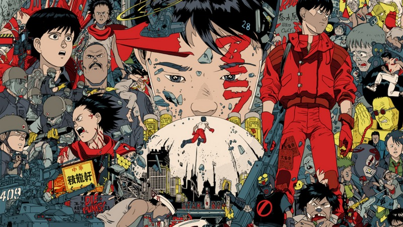

☆Gênero: Cyberpunk/ Terror/ Ficção pós-apocaliptica
☆lançamento: 09/08/1991
☆diretor(a): Katsurhiro Otomo
☆Studio: Studio TMS Entertainmment
☆classificação indicativa: +18
☆Duração: 2h 4mn
avaliação:★★★★☆ (4,4)
Sinopse
Uma enorme explosão fez com que Tóquio fosse destruída em 1988. Em seu lugar foi construída Neo Tóquio, que, em 2019, sofre com atentados terroristas por toda a cidade. Os amigos Kaneda e Tetsuo integram uma gangue de motoqueiros. Eles disputam rachas violentos com uma gangue rival, os Palhaços, até que um dia Tetsuo encontra Takashi, uma estranha criança com poderes que fugiu do hospital onde era mantido como cobaia.